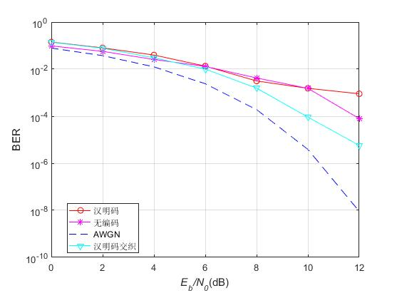
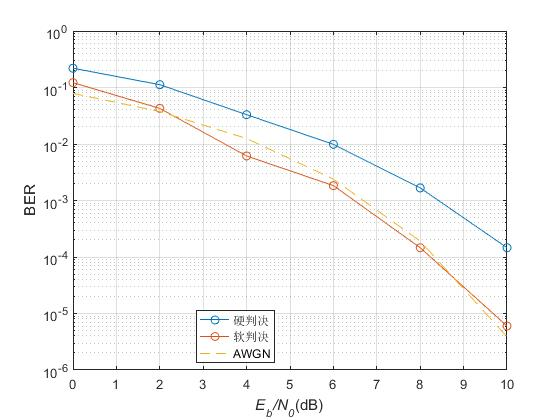

又是一篇关于课程内容的文章，这次是卫星通信课设。如题所示，按照要求，我们需要设计一种支持话音业务的卫星通信链路信道编码设计，以达到给定的性能指标，不过稍微想想也能知道，我们现在并不具备这样的能力，我猜测这个课设题的目的是为了让我们熟悉已有的信道编码方式，比较它们的性能并根据需要选择一种方式。先给出题目：
题目三：支持话音业务的卫星通信链路道编码设计 。话音信号的传输速率为 4.8kbps，误码性能为 $1\times 10^{-3}$，并采用 BPSK 调制方式。设计一种在开阔地区可进行话音通信的信道编码方式。
题目理解
五个人开了两次会，讨论出一个大概的对于题目理解的结果。题目不长，有几个关键点需要抓住：信道编码，传输速率，误码性能，BPSK 和开阔地区。我们的分析结果如下：
- 虽然在开阔地区或许不用考虑多径干扰，但是还是需要考虑卫星通信中的突发错误，因此需要考虑交织技术来对抗突发错误，由话音业务中的时延要求确定交织时延的大小，进而通过传输速率确定交织深度。
- 最终的比较选择是在误码率 $1\times 10^{-3}$ 下，我们计算不同的信道编码方式下需要的信噪比即可，这是最主要的方面，同时码率和时延进行分析比较，得出最终的编码方式选择结果。
好在开题时老师指出了我们的一些问题，也给我们指明了方向：
- 在设计信道编码时，必须要考虑到具体的链路参数，最好用一个实际的卫星和地面段进行分析，信道考虑为莱斯信道是正确的；
- 信道编码的选择受到很多参数的约束，我们需要在这些参数中间进行折中考虑，如功率效率、误码率、编码效率和带宽。
按照老师的指导，我们分工了，有人负责链路预算，有人复杂写报告，我负责进行 MATLAB 仿真。
仿真
折腾了两天，最终仿真了汉明码和卷积码在 AWGN 信道和莱斯信道下的误码性能，还做了下经过交织后的汉明码在莱斯信道下的误码性能，但是效果很差，由于时间紧急，没来得及做交织后的卷积码在莱斯信道下的误码性能分析，实际当中经过交织的卷积码才是用的比较多的。
具体代码在此列出了，放到了 Github 上，新建了一个仓库用来存放所有做过的实验和一些课设的代码，本次课设的代码地址在这里。这里就放几张图吧。


总结
仿真而论，本次课设并没有太多可说道的，当然这也不是本次课设的目的，结题答辩时老师告诉我们这次课设不是让我们去计算什么，是为了让我们去尝试在一个系统中设计一些东西，全面考虑问题，做一些折中。深以为然。